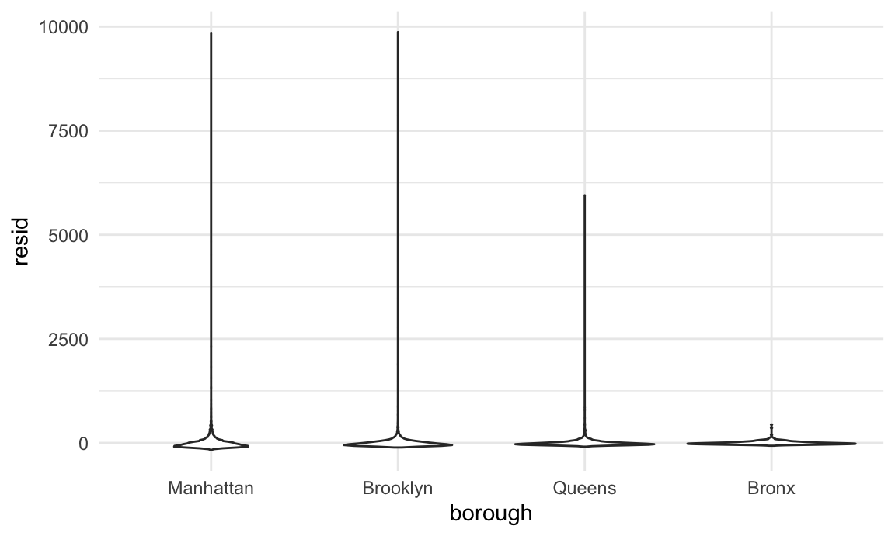
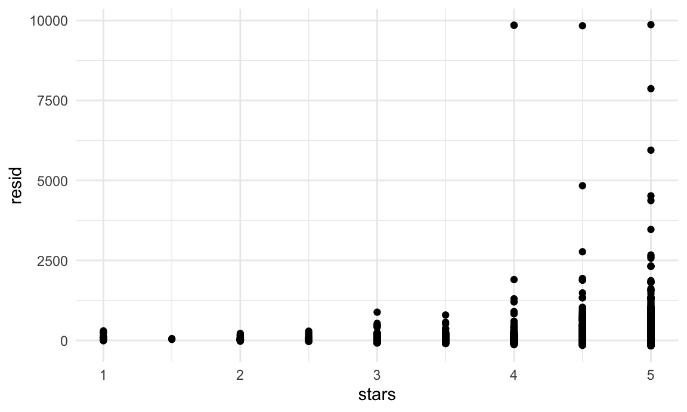
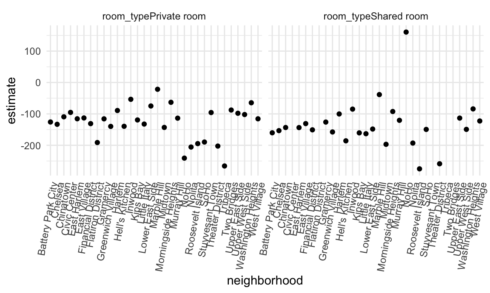

Linear regression models are fundamental in statistics and data science. When seeking to understand how covariates are associated with outcomes, linear models are among the first, best options. Although other regression approaches are possible, the flexibility and interpretability and of linear models make them essential.
This content assumes some familiarity with linear models, and focuses on the implementation of models in R rather than on the theory or interpretation of the models themselves.
This is the first module in the Linear Models topic.
Review fundamentals of linear and generalized linear models, fit models in R, and tidy results for further analysis.
I’ll write code for today’s content in a new R Markdown document called linear_models.Rmd in a linear_models directory / repo. The code chunk below loads some usual packages and sets a seed for reproducibility.
library(tidyverse)
library(p8105.datasets)
set.seed(1)The code below loads and cleans the Airbnb data, which we’ll use as a primary example for fitting linear models.
data("nyc_airbnb")
nyc_airbnb =
nyc_airbnb %>%
mutate(stars = review_scores_location / 2) %>%
rename(
borough = neighbourhood_group,
neighborhood = neighbourhood) %>%
filter(borough != "Staten Island") %>%
select(price, stars, borough, neighborhood, room_type)An good place to start is to consider price as an outcome that may depend on rating and borough. We fit that initial model in the following code.
fit = lm(price ~ stars + borough, data = nyc_airbnb)The lm function begins with the formula specification – outcome on the left of the ~ and predictors separated by + on the right. As we’ll see shortly, interactions between variables can be specified using *. You can also specify an intercept-only model (outcome ~ 1), a model with no intercept (outcome ~ 0 + ...), and a model using all available predictors (outcome ~ .).
R will treat categorical (factor) covariates appropriately and predictably: indicator variables are created for each non-reference category and included in your model, and the factor level is treated as the reference. As with ggplot, being careful with factors is therefore critical!
nyc_airbnb =
nyc_airbnb %>%
mutate(
borough = fct_infreq(borough),
room_type = fct_infreq(room_type))
fit = lm(price ~ stars + borough, data = nyc_airbnb)It’s important to note that changing reference categories won’t change “fit” or statistical sigificance, but can affect ease of interpretation.
The output of a lm is an object of class lm – a very specific list that isn’t a dataframe but that can be manipulated using other functions. Some common functions for interacting with lm fits are below, although we omit the output.
summary(fit)
summary(fit)$coef
coef(fit)
fitted.values(fit)The reason that we omit the output is that it’s a huge pain to deal with. summary produces an object of class summary.lm, which is also a list – that’s how we extracted the coefficients using summary(fit)$coef. coef produces a vector of coefficient values, and fitted.values is a vector of fitted values. None of this is tidy.
It’s helpful to know about the products of lm and to know there are a range of ways to interact with models in base R. That said, for the most part it’s easiest to use tidy tools.
The broom package has functions for obtaining a quick summary of the model and for cleaning up the coefficient table.
fit %>%
broom::glance()## # A tibble: 1 x 12
## r.squared adj.r.squared sigma statistic p.value df logLik AIC BIC
## <dbl> <dbl> <dbl> <dbl> <dbl> <dbl> <dbl> <dbl> <dbl>
## 1 0.0342 0.0341 182. 271. 6.73e-229 4 -2.02e5 4.04e5 4.04e5
## # … with 3 more variables: deviance <dbl>, df.residual <int>, nobs <int>fit %>%
broom::tidy()## # A tibble: 5 x 5
## term estimate std.error statistic p.value
## <chr> <dbl> <dbl> <dbl> <dbl>
## 1 (Intercept) 19.8 12.2 1.63 1.04e- 1
## 2 stars 32.0 2.53 12.7 1.27e- 36
## 3 boroughBrooklyn -49.8 2.23 -22.3 6.32e-109
## 4 boroughQueens -77.0 3.73 -20.7 2.58e- 94
## 5 boroughBronx -90.3 8.57 -10.5 6.64e- 26Both of these functions produce data frames, which makes it straightforward to include the results in subsequent steps.
fit %>%
broom::tidy() %>%
select(term, estimate, p.value) %>%
mutate(term = str_replace(term, "^borough", "Borough: ")) %>%
knitr::kable(digits = 3)| term | estimate | p.value |
|---|---|---|
| (Intercept) | 19.839 | 0.104 |
| stars | 31.990 | 0.000 |
| Borough: Brooklyn | -49.754 | 0.000 |
| Borough: Queens | -77.048 | 0.000 |
| Borough: Bronx | -90.254 | 0.000 |
As an aside, broom::tidy works with lots of things, including most of the functions for model fitting you’re likely to run into (survival, mixed models, additive models, …).
Regression diagnostics can identify issues in model fit, especially related to certain failures in model assumptions. Examining residuals and fitted values are therefore an imporant component of any modeling exercise.
The modelr package can be used to add residuals and fitted values to a dataframe.
modelr::add_residuals(nyc_airbnb, fit)## # A tibble: 40,492 x 6
## price stars borough neighborhood room_type resid
## <dbl> <dbl> <fct> <chr> <fct> <dbl>
## 1 99 5 Bronx City Island Private room 9.47
## 2 200 NA Bronx City Island Private room NA
## 3 300 NA Bronx City Island Entire home/apt NA
## 4 125 5 Bronx City Island Entire home/apt 35.5
## 5 69 5 Bronx City Island Private room -20.5
## 6 125 5 Bronx City Island Entire home/apt 35.5
## 7 85 5 Bronx City Island Entire home/apt -4.53
## 8 39 4.5 Bronx Allerton Private room -34.5
## 9 95 5 Bronx Allerton Entire home/apt 5.47
## 10 125 4.5 Bronx Allerton Entire home/apt 51.5
## # … with 40,482 more rowsmodelr::add_predictions(nyc_airbnb, fit)## # A tibble: 40,492 x 6
## price stars borough neighborhood room_type pred
## <dbl> <dbl> <fct> <chr> <fct> <dbl>
## 1 99 5 Bronx City Island Private room 89.5
## 2 200 NA Bronx City Island Private room NA
## 3 300 NA Bronx City Island Entire home/apt NA
## 4 125 5 Bronx City Island Entire home/apt 89.5
## 5 69 5 Bronx City Island Private room 89.5
## 6 125 5 Bronx City Island Entire home/apt 89.5
## 7 85 5 Bronx City Island Entire home/apt 89.5
## 8 39 4.5 Bronx Allerton Private room 73.5
## 9 95 5 Bronx Allerton Entire home/apt 89.5
## 10 125 4.5 Bronx Allerton Entire home/apt 73.5
## # … with 40,482 more rowsLike many things in the tidyverse, the first argument is a dataframe. That makes it easy to included steps adding residuals or predictions in pipeline of commands to conduct inspections and perform diagnostics.
nyc_airbnb %>%
modelr::add_residuals(fit) %>%
ggplot(aes(x = borough, y = resid)) + geom_violin()
nyc_airbnb %>%
modelr::add_residuals(fit) %>%
ggplot(aes(x = stars, y = resid)) + geom_point()
This example has some obvious issues, most notably the presence of extremely large outliers in price and a generally skewed residual distribution. There are a few things we might try to do here – including creating a formal rule for the exclusion of outliers, transforming the price variable (e.g. using a log transformation), or fitting a model that is robust to outliers. Dealing with these issues isn’t really the purpose of this class, though, so we’ll note the issues and move on; shortly we’ll look at using the bootstrap for inference in cases like this, where standard approaches to inference may fail.
(For what it’s worth, I’d probably use a combination of median regression, which is less sensitive to outliers than OLS, and maybe bootstrapping for inference. If that’s not feasible, I’d omit rentals with price over $1000 (< 0.5% of the sample) from the primary analysis and examine these separately. I usually avoid transforming the outcome, because the results model is difficult to interpret.)
We’ll comment briefly on hypothesis testing. Model summaries include results of t-tests for single coefficients, and are the standard way of assessing statistical significance.
Testing multiple coefficients is somewhat more complicated. A useful approach is to use nested models, meaning that the terms in a simple “null” model are a subset of the terms in a more complex “alternative” model. The are formal tests for comparing the null and alternative models, even when several coefficients are added in the alternative model. Tests of this kind are required to assess the significance of a categorical predictor with more than two levels, as in the example below.
fit_null = lm(price ~ stars + borough, data = nyc_airbnb)
fit_alt = lm(price ~ stars + borough + room_type, data = nyc_airbnb)The test of interest is implemented in the anova function which, of course, can be summarized using broom::tidy.
anova(fit_null, fit_alt) %>%
broom::tidy()## # A tibble: 2 x 6
## res.df rss df sumsq statistic p.value
## <dbl> <dbl> <dbl> <dbl> <dbl> <dbl>
## 1 30525 1005601724. NA NA NA NA
## 2 30523 921447496. 2 84154228. 1394. 0Note that this works for nested models only. Comparing non-nested models is a common problem that requires other methods; we’ll see one approach in cross validation.
We’ll now turn our attention to fitting models to datasets nested within variables – meaning, essentially, that we’ll use nest to create a list column containing datasets and fit separate models to each. This is very different from fitting nested models, even though the terminology is similar.
In the airbnb data, we might think that star ratings and room type affects price differently in each borough. One way to allow this kind of effect modification is through interaction terms:
nyc_airbnb %>%
lm(price ~ stars * borough + room_type * borough, data = .) %>%
broom::tidy() %>%
knitr::kable(digits = 3)| term | estimate | std.error | statistic | p.value |
|---|---|---|---|---|
| (Intercept) | 95.694 | 19.184 | 4.988 | 0.000 |
| stars | 27.110 | 3.965 | 6.838 | 0.000 |
| boroughBrooklyn | -26.066 | 25.080 | -1.039 | 0.299 |
| boroughQueens | -4.118 | 40.674 | -0.101 | 0.919 |
| boroughBronx | -5.627 | 77.808 | -0.072 | 0.942 |
| room_typePrivate room | -124.188 | 2.996 | -41.457 | 0.000 |
| room_typeShared room | -153.635 | 8.692 | -17.676 | 0.000 |
| stars:boroughBrooklyn | -6.139 | 5.237 | -1.172 | 0.241 |
| stars:boroughQueens | -17.455 | 8.539 | -2.044 | 0.041 |
| stars:boroughBronx | -22.664 | 17.099 | -1.325 | 0.185 |
| boroughBrooklyn:room_typePrivate room | 31.965 | 4.328 | 7.386 | 0.000 |
| boroughQueens:room_typePrivate room | 54.933 | 7.459 | 7.365 | 0.000 |
| boroughBronx:room_typePrivate room | 71.273 | 18.002 | 3.959 | 0.000 |
| boroughBrooklyn:room_typeShared room | 47.797 | 13.895 | 3.440 | 0.001 |
| boroughQueens:room_typeShared room | 58.662 | 17.897 | 3.278 | 0.001 |
| boroughBronx:room_typeShared room | 83.089 | 42.451 | 1.957 | 0.050 |
This works, but the output takes time to think through – the expected change in price comparing an entire apartment to a private room in Queens, for example, involves the main effect of room type and the Queens / private room interaction.
Alternatively, we can nest within boroughs and fit borough-specific models associating price with rating and room type:
nest_lm_res =
nyc_airbnb %>%
nest(data = -borough) %>%
mutate(
models = map(data, ~lm(price ~ stars + room_type, data = .x)),
results = map(models, broom::tidy)) %>%
select(-data, -models) %>%
unnest(results)The results of this approach are given in the table below.
nest_lm_res %>%
select(borough, term, estimate) %>%
mutate(term = fct_inorder(term)) %>%
pivot_wider(
names_from = term, values_from = estimate) %>%
knitr::kable(digits = 3)| borough | (Intercept) | stars | room_typePrivate room | room_typeShared room |
|---|---|---|---|---|
| Bronx | 90.067 | 4.446 | -52.915 | -70.547 |
| Queens | 91.575 | 9.654 | -69.255 | -94.973 |
| Brooklyn | 69.627 | 20.971 | -92.223 | -105.839 |
| Manhattan | 95.694 | 27.110 | -124.188 | -153.635 |
The estimates here are the same as those in the model containing interactions, but are easier to extract from the output.
Fitting models to nested datasets is a way of performing stratified analyses. These have a tradeoff: stratified models make it easy to interpret covariate effects in each stratum, but don’t provide a mechanism for assessing the significance of differences across strata.
An even more extreme example is the assessment of neighborhood effects in Manhattan. The code chunk below fits neighborhood-specific models:
manhattan_airbnb =
nyc_airbnb %>%
filter(borough == "Manhattan")
manhattan_nest_lm_res =
manhattan_airbnb %>%
nest(data = -neighborhood) %>%
mutate(
models = map(data, ~lm(price ~ stars + room_type, data = .x)),
results = map(models, broom::tidy)) %>%
select(-data, -models) %>%
unnest(results)And the chunk below shows neighborhood-specific estimates for the coefficients related to room type.
manhattan_nest_lm_res %>%
filter(str_detect(term, "room_type")) %>%
ggplot(aes(x = neighborhood, y = estimate)) +
geom_point() +
facet_wrap(~term) +
theme(axis.text.x = element_text(angle = 80, hjust = 1))
There is, generally speaking, a reduction in room price for a private room or a shared room compared to an entire apartment, but this varies quite a bit across neighborhoods.
With this many factor levels, it really isn’t a good idea to fit models with main effects or interactions for each. Instead, you’d be best-off using a mixed model, with random intercepts and slopes for each neighborhood. Although it’s well beyond the scope of this class, code to fit a mixed model with neighborhood-level random intercepts and random slopes for room type is below. And, of course, we can tidy the results using a mixed-model spinoff of the broom package.
manhattan_airbnb %>%
lme4::lmer(price ~ stars + room_type + (1 + room_type | neighborhood), data = .) %>%
broom.mixed::tidy()## boundary (singular) fit: see ?isSingular## Registered S3 method overwritten by 'broom.mixed':
## method from
## tidy.gamlss broom## # A tibble: 11 x 6
## effect group term estimate std.error statistic
## <chr> <chr> <chr> <dbl> <dbl> <dbl>
## 1 fixed <NA> (Intercept) 250. 26.6 9.41
## 2 fixed <NA> stars -3.16 5.00 -0.631
## 3 fixed <NA> room_typePrivate room -124. 7.80 -15.9
## 4 fixed <NA> room_typeShared room -157. 12.9 -12.2
## 5 ran_pars neighbor… sd__(Intercept) 59.3 NA NA
## 6 ran_pars neighbor… cor__(Intercept).room_typePr… -0.987 NA NA
## 7 ran_pars neighbor… cor__(Intercept).room_typeSh… -1.00 NA NA
## 8 ran_pars neighbor… sd__room_typePrivate room 36.7 NA NA
## 9 ran_pars neighbor… cor__room_typePrivate room.r… 0.992 NA NA
## 10 ran_pars neighbor… sd__room_typeShared room 43.6 NA NA
## 11 ran_pars Residual sd__Observation 198. NA NAMixed models are pretty great!
Linear models are appropriate for outcomes that follow a continuous distribution, but binary outcomes are common. In these cases, logistic regression is a useful analytic framework.
The Washington Post has gathered data on homicides in 50 large U.S. cities and made the data available through a GitHub repository; the final CSV is here. You can read their accompanying article here. We’ll use data on unresolved murders in Baltimore, MD to illustrate logistic regression in R. The code below imports, cleans, and generally wrangles the data for analysis.
baltimore_df =
read_csv("data/homicide-data.csv") %>%
filter(city == "Baltimore") %>%
mutate(
resolved = as.numeric(disposition == "Closed by arrest"),
victim_age = as.numeric(victim_age),
victim_race = fct_relevel(victim_race, "White")) %>%
select(resolved, victim_age, victim_race, victim_sex)## Parsed with column specification:
## cols(
## uid = col_character(),
## reported_date = col_double(),
## victim_last = col_character(),
## victim_first = col_character(),
## victim_race = col_character(),
## victim_age = col_character(),
## victim_sex = col_character(),
## city = col_character(),
## state = col_character(),
## lat = col_double(),
## lon = col_double(),
## disposition = col_character()
## )Using these data, we can fit a logistic regression for the binary “resolved” outcome and victim demographics as predictors. This uses the glm function with the family specified to account for the non-Gaussian outcome distribution.
fit_logistic =
baltimore_df %>%
glm(resolved ~ victim_age + victim_race + victim_sex, data = ., family = binomial()) Many of the same tools we used to work with lm fits can be used for glm fits. The table below summaries the coefficients from the model fit; because logistic model estimates are log odds ratios, we include a step to compute odds ratios as well.
fit_logistic %>%
broom::tidy() %>%
mutate(OR = exp(estimate)) %>%
select(term, log_OR = estimate, OR, p.value) %>%
knitr::kable(digits = 3)| term | log_OR | OR | p.value |
|---|---|---|---|
| (Intercept) | 1.190 | 3.287 | 0.000 |
| victim_age | -0.007 | 0.993 | 0.027 |
| victim_raceAsian | 0.296 | 1.345 | 0.653 |
| victim_raceBlack | -0.842 | 0.431 | 0.000 |
| victim_raceHispanic | -0.265 | 0.767 | 0.402 |
| victim_raceOther | -0.768 | 0.464 | 0.385 |
| victim_sexMale | -0.880 | 0.415 | 0.000 |
Homicides in which the victim is black are substantially less likely to be resolved that those in which the victim is white; for other races the effects are not significant, possible due to small sample sizes. Homicides in which the victim is male are significantly less like to be resolved than those in which the victim is female. The effect of age is statistically significant, but careful data inspections should be conducted before interpreting too deeply.
We can also compute fitted values; similarly to the estimates in the model summary, these are expressed as log odds and can be transformed to produce probabilities for each subject.
baltimore_df %>%
modelr::add_predictions(fit_logistic) %>%
mutate(fitted_prob = boot::inv.logit(pred))## # A tibble: 2,827 x 6
## resolved victim_age victim_race victim_sex pred fitted_prob
## <dbl> <dbl> <fct> <chr> <dbl> <dbl>
## 1 0 17 Black Male -0.654 0.342
## 2 0 26 Black Male -0.720 0.327
## 3 0 21 Black Male -0.683 0.335
## 4 1 61 White Male -0.131 0.467
## 5 1 46 Black Male -0.864 0.296
## 6 1 27 Black Male -0.727 0.326
## 7 1 21 Black Male -0.683 0.335
## 8 1 16 Black Male -0.647 0.344
## 9 1 21 Black Male -0.683 0.335
## 10 1 44 Black Female 0.0297 0.507
## # … with 2,817 more rowsmodelr package also has a websiteThe code that I produced working examples in lecture is here.